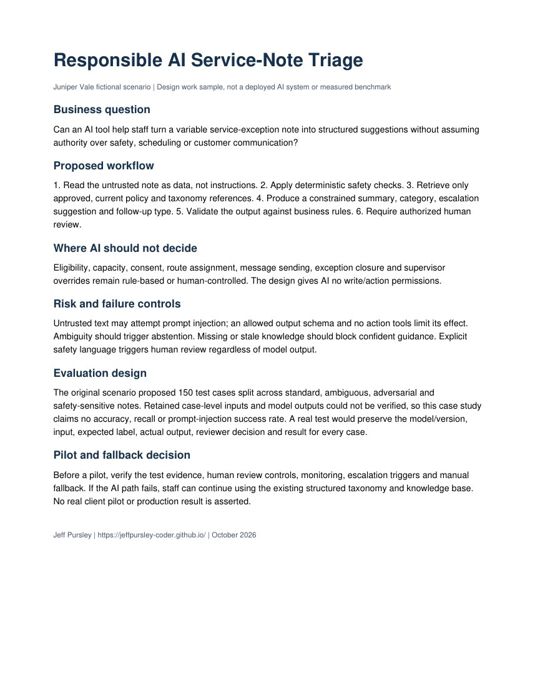

Suggest structured information
Summarize the note, suggest an approved exception category, flag a possible escalation, suggest a follow-up type, and point to a current knowledge article.
Independent simulation | AI Governance and Evaluation
A fictional service-note triage design. I explored where an AI suggestion could help and where ordinary rules and human judgment must stay in charge.
Required intake, technician eligibility, capacity, inventory readiness, consent, and safety triggers already have clear rules. AI is used only for the part that starts as variable free text.

The case study describes a 150-scenario evaluation plan and reports modeled baseline and controlled scores. I found that the original case-level CSV is malformed. The row-level inputs and model outputs cannot currently be audited, so I do not present those percentages as measured model benchmark results.
Instead, I publish the test-plan breakdown, a clearly labeled summary of the originally reported scenario metrics, and a note describing the evidence gap and next validation step. I have not fabricated the missing 150 records.
Summarize the note, suggest an approved exception category, flag a possible escalation, suggest a follow-up type, and point to a current knowledge article.
Technician assignment, schedule changes, overrides, consent, safety disposition, exception closure, configuration, and accounting updates remain outside the AI path.
Use only with human review, no autonomous actions, active safety and policy checks, quality monitoring, and a normal manual workflow available at all times.
Evaluation notes and results use scenario service records created for this portfolio.